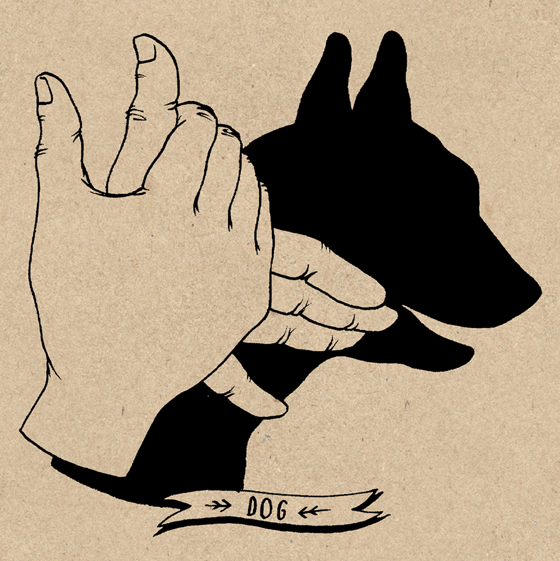
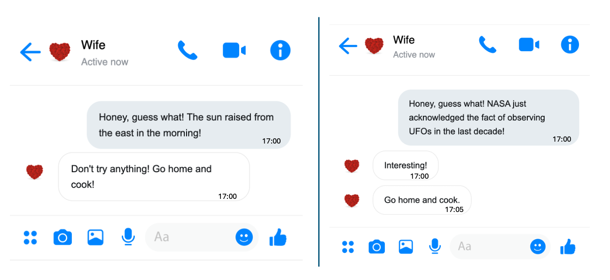

2. Principle Components Analysis
PCA is an important data analysis method in statistics, particularly in multivariate statistical analysis. Mathematicians and statisticians have studied it extensively and in great depth. Among them, the Swedish 🇸🇪 mathematician and statistician Herman Wold made significant contributions to the understanding and expansion of PCA’s essence. In fact, if we review his works on PCA related issues, we can even catch glimpses of the modern artificial neural network models. Let us pay tribute to this great pioneer! 🎩👏
2.1 What is PCA?

PCA is a linear feature extraction tool. Let’s first provide the definition:
PCA is a linear numerical method for creating a relatively smaller set of mutually orthogonal new variables from the original dataset and the most information can be preserved in the new dataset.
Next, let me explain each highlighted key words in the definition.
New variables and Linear: The term “new variable” is easy to understand. PCA is a type of feature extraction method, and the results of feature extraction are essentially new variables. However, this feature extraction, or the map \(g()\), is not arbitrary; we constrain it to be linear. In other words, all the new variables must satisfy the following equation:
\[ g_{\textbf{w}}(\textbf{x}) = w_1x_1 + w_2x_2 + \dots + w_px_p \] where \(\textbf{x}\) expresses all the \(p\) original feature variables, and \(\textbf{w}\) contains all the \(p\) coefficients. A straightforward example is the average. The average is a widely used method of summarizing information in real-life situations. It is the time to awkwardly show the generation gap. For example, in old-style music competitions, a singer would typically receive scores from several judges after their performance. Then, the host would say, “Remove the highest score, remove the lowest score, and the final score is……” The final score is just the average. More precisely, it is the truncated mean.
Here, I want to emphasize something for you. To make it more memorable, let me start with a sad memory.
Sad memories: In middle school, I was very good at mathematics and physics, and also terrible at English and literature. The end of every exam was always the most awkward moment for me. Say I got 100 scores both for mathematics and physics, but 0 scores both for English and literature. My teacher simply informed the average score as the overall evaluation of my study to my parents. I guess she used the following formula \[ \frac{1}{4} \text{Math} + \frac{1}{4} \text{Physics}+ \frac{1}{4} \text{English} + \frac{1}{4} \text{Literature} \] Obviously, I was hopeless. However, my smart mother courageously stepped up, she simply adjusted the coefficients of the feature extraction function, \[ \frac{1}{2} \text{Math} + \frac{1}{2} \text{Physics}+ 0 \cdot \text{English}+ 0 \cdot \text{Literature} \] and told me that you are actually great!
A good choice of coefficients not only can save a young people but also leads to a informative new variable for different purposes. This sad story highlights the role of coefficients in the feature extraction function. In one word, different coefficients lead to different information.

I would like to use the above picture to close the discussion about this keyword. Essentially, the extracted feature is just the weighted sum of original features, while the weighted sum is called linear combination in linear algebra and the geometry meaning of linear combination is projection. I strongly suggest you read about mathematical projection if you are not familiar with this concept.
This hand shadow game is a good example. If you don’t know it, just looking at the two hands won’t immediately tell you what the performer wants to show the audience. But once the light casts a shadow, the image of a dog becomes clear. The basic idea of feature extraction is similar—by using the right feature extraction function, useful information can be presented in a way that is easy for a computer to recognize. In one words, the new variable can be viewed as a shadow of the object (\(\textbf{x}\)) from a proper direction (\(\textbf{w}\)).
Information : Based on the discussion above, it’s not difficult to see that the goal of the PCA algorithm is to find a set of suitable coefficients to achieve feature extraction. But what does “suitable” coefficients mean? Are there specific criteria for this? To understand the answer to this question, we need to take a closer look at the key term “information”.
In statistics and information theory, we have many measures of information. In PCA, however, we use a simple and familiar measure to quantify how much information a variable contains, that is “Variance”. Let’s start with an interesting example.
I will present two events—think about which one you would be more eager to share with your family or friends:
Event 1: This morning, the sun raised in the east.
Event 2: NASA has just admitted to observing UFOs over the past 10 years.
I think you already have the answer. No rush, let me and my wife simulate this scenario, as shown in the picture below.

On the left, my wife immediately saw through my trick of avoiding cooking at home. On the right, she was genuinely shocked by the news—although she still figured out my trick five minutes later. For us, the amount of information in a message depends on how surprising it is. Essentially, information amount is roughly equal to the degree of surprise.
Another example, I tell two students, “You can pass this exam.” The first student has prepared well and is confident in their answers, while the second student didn’t do well and feels uncertain. Clearly, the amount of information my message carries is completely different for them. Therefore, the degree of surprise in a message depends on the uncertainty of the event it describes. In statistics, uncertainty is usually measured by variance.
Let me use one last example to convince you. Suppose we have an epidemiological dataset about cervical cancer, which includes age, gender, BMI, and various health indicators. Now, which variable do we absolutely not need? Think about what the variance of this variable would be.
Orthogonal : At this point, we’ve basically understood the core idea of how PCA extracts new variables. However, there’s one more thing to clarify: for a dataset containing many variables, we usually extract a set of new variables. The PCA algorithm has a specific requirement for the relationship between these extracted variables, which is orthogonality. Simply put, orthogonality means that there is no linear relationship between the extracted variables, meaning their covariance is zero. We’ll see this more clearly in a concrete example later.
2.2 PCA Problem
With all this groundwork laid out, it becomes much easier to understand how PCA extracts variables from the original dataset. Simply put, PCA first aims to find a set of coefficients to calculate new variables, and this set of coefficients is designed to maximize the variance of the extracted new variables. Suppose, we have \(p\) variables in a dataset. \[ \max_{\textbf{w}} \left\{ \text{Var} \left( \underbrace{w_1 \cdot x_1 + w_2 \cdot x_2 + \dots + w_p \cdot x_p}_{\text{extracted feature}} \right) \right\} \]
By solving this optimization problem, we obtain an optimizer \(\textbf{w}_1\) that is a set of coefficients for computing the first new variable. We call \(\textbf{w}_1\) the first Principal Component weights (PC weithgs), and the variable calculated using these coefficients is commonly known as the first principal component. Of course, these are just statistical terms. In machine learning, this is simply a feature extraction function obtained through an algorithm under certain constraints.
As mentioned earlier, we usually need to extract a series of new variables from the original dataset to replace the old ones, achieving dimensionality reduction. Finding the second set of coefficients is not much different from the previous problem—we still aim to maximize the variance of the resulting variable. However, the key difference is that we need to add a constraint to ensure that we do not obtain the same first PC weights again. This constraint is what we call orthogonality before.
\[ \max_{\textbf{w}: \textbf{w} \perp \textbf{w}_1} \left\{ \text{Var} \left( \underbrace{w_1 \cdot x_1 + w_2 \cdot x_2 + \dots + w_p \cdot x_p}_{\text{extracted feature}} \right) \right\} \] Some linear algebra knowledge is needed to fully understand \(\textbf{w} \perp \textbf{w}_1\), but you can ignore the details for now and just remember two key points:
- This condition prevents us from obtaining the first set of PC weights again.
- The second principal component (new variable) obtained this way will be linearly uncorrelated with the first principal component.
Of course, if needed, we continue searching for the third set of PC weights. This time, we need to add two orthogonality constraints to ensure it remains uncorrelated with both the first and second principal components, that is \(\textbf{w} \perp \textbf{w}_1\) and \(\textbf{w} \perp \textbf{w}_2\). By following this approach, we can continue finding more PC weights. In fact, we can obtain up to \(p\) new variables—yes, the same number as in the original dataset.
You might be wondering: How does this achieve dimensionality reduction? Let’s explore this in the next section with a concrete example.